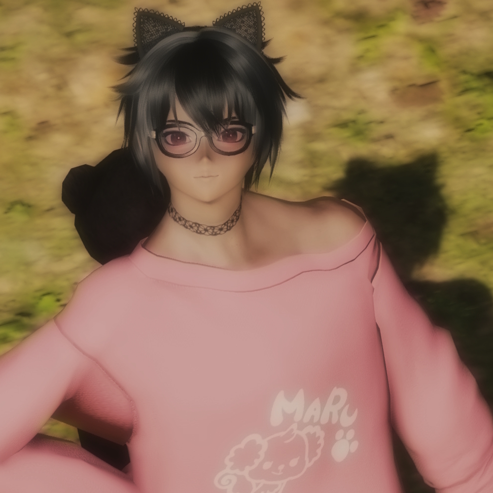

Character Page

Haruki
- Fullname: Haruki Nakamura
- Nickname(s): Haru
- Species: Vampire
- Nationality: Japanese
- Language(s): Japanese & English
- Birthdate: 4th March 2000
- Height: 162 cm
- Weight: 58 kg
- MBTI: ENFP-A
- Interests: Anime, Idols & Blood
- Career: -
- Relatives: Leviana (daughter)
- Partner(s): -
Lotsa lore here!
Gallery
Lotsa pics here!
Game origins
Phantasy Star Online 2